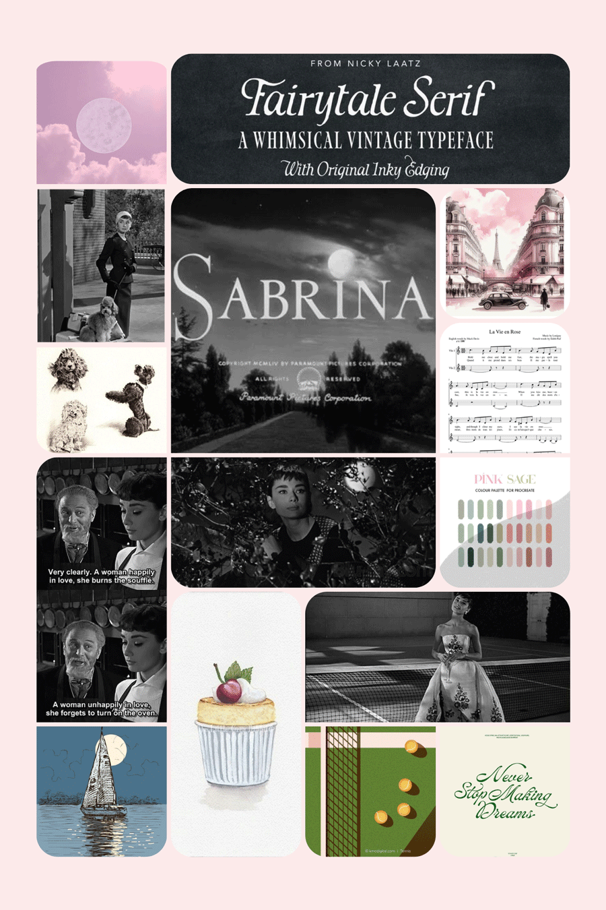

WHAT:
A one minute title sequence for a film
WHY:
To establish the tone and setting of the film and present its title, key production people, and cast, utilizing conceptual visuals and sound. In this case, I was motivated by exploring and reimagining what could have been done in terms of storytelling in the original title sequence.
I chose to reimagine the title sequence for the 1954 film, "Sabrina".
After considering the thematic elements woven throughout the film, I decided to highlight the moon. I was partially inspired by an exchange between Sabrina and her father that takes place within the film. When her father tells her "He's still David Larrabee, and you're still the chauffeur's daughter, and you're still reaching for the moon". Sabrina replies, "No, father. The moon's reaching for me".
As viewers watch the title sequence, they see the moon move and change according to Sabrina's journey. It begins as the moon itself, as seen from the tree Sabrina watches the world from before changing into the tennis ball in David's tennis court. It rolls to the culinary school Sabrina attends in Paris, becoming an egg. From there, the moon rolls like a ball to where it is found by David (the poodle). Finally, we come full circle and the moon is seen as itself once again, rising over the sea where Sabrina and Linus could see it from the boat.
The color palette of pastel pink, sage green, and cream was inspired by femininity and the 1950s.
Before getting to work in Adobe After Effects, I created the storyboards and hand-illustrated elements in Procreate.
Finally, I worked in Adobe After Effects to time the motion with the music (Edith Piaf's 'La Vie en Rose'), taking care to make sure each name was presented in the correct order for the appropriate amount of time. I watched the original title sequence and took notes on the order and timing of credits in order to do so.